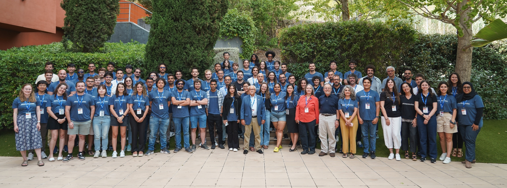

Awards and Grants
Honorable Mention
7th Thesis and Dissertation Contest at the Brazilian Symposium on Databases (SBBD), 2025
Read More
Best Full Paper
8th Workshop on Data Management for End-to-End Machine Learning (DEEM) at SIGMOD, 2024
Read More
Travel Grant
ACM Europe Summer School on HPC Computer Architectures for AI and Dedicated Applications, 2024
Read More CNPq Scholarship
Doctoral Scholarship, 2021-2025
Doctoral Scholarship from the National Council for Scientific and Technological Development (CNPq), Brazil, for the period of 2021-2025.
CAPES/PRINT Scholarship
Sandwich PhD Scholarship, 2022-2023